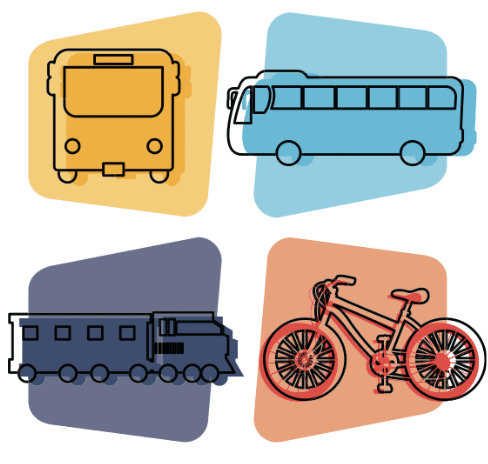
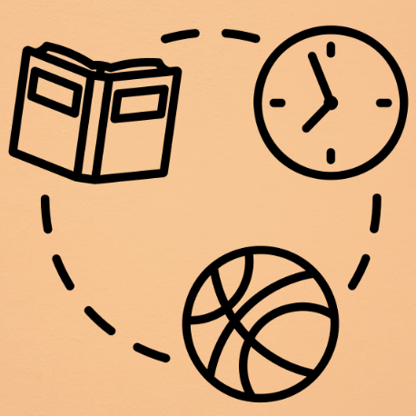
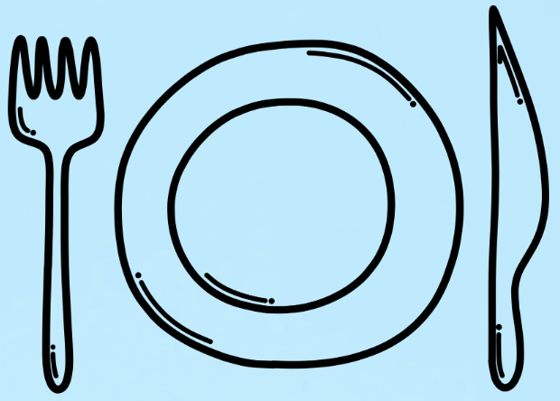

Transport options
There are various transport options around Sydney, learn which transport option is optimal for you. Travelling using the metro is both fast and
convenient, however, metro stations are limited. Use trains for a slower and more leisurely ride, with a broader range of stops. Buses are more
specific, allowing you to arrive much closer to a desired location.
Click here to discover more

Activities in Castle Hill
Castle hill is a region with an abundant amount of activities, allowing teenagers to enjoy themselves alongside their friends.
Teenagers can scroll around Castle towers and enjoy shopping at various different stores, or watch an exiting movie at event
cinemas, or maybe even enjoy a lively bushwalk at Castle hill heratige reserve.
Click here to discover more

Food in Castle Hill
Castle Hill has a wide range of food options from many different cultures, providing a pleasant experience for every
person, no matter their taste palette. Many restaurants can be found in Castle Towers, specifically in the food court
and the plaza, allowing teens to contemplate their desired meal.